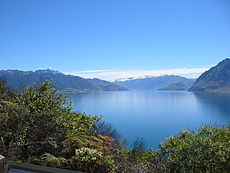
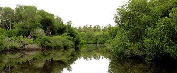

CONTINUANDO CON LAS RAMAS DE LA ECOLOGÍA NOS ENCONTRAMOS CON LA LIMNOLOGÍA, LA CUAL SE ENFOCA EN LOS ECOSISTEMAS ACUÁTICOS.
ESTA DISCIPLINA CONCRETAMENTE ESTUDIA LAS INTERACCIONES DE LOS ORGANISMOS QUE FORMAN PARTE DE LOS RÍOS, LAGUNAS O LAGOS, CON EL
FIN DE CONOCER SU DISTRIBUCIÓN Y PODER ESTUDIARLA CORRECTAMENTE.

LA LIMNOLOGÍA ES LA RAMA DE LA ECOLOGÍA QUE ESTUDIA LOS ECOSISTEMAS ACUÁTICOS CONTINENTALES, INCLUYENDO
EL AGUA SUBTERRÁNEA Y CUERPOS DE AGUA INTERMITENTES, LAS INTERACCIONES ENTRE LOS ORGANISMOS.
CUÁL ES LA IMPORTANCIA DE LA LIMNOLOGÍA:
HOY EN DÍA LA LIMNOLOGÍA JUEGA UN PAPEL IMPORTANTE EN EL PLANEAMIENTO DEL USO Y LA DISTRIBUCIÓN DEL AGUA,
ASÍ COMO EN LA PROTECCIÓN DE HÁBITATS PARA LA VIDA SILVESTRE.

QUE HACEN LOS LIMNOLOGOS:
LA LIMNOLOGÍA ES UNA RAMA DE LA ECOLOGÍA QUE ESTUDIA TODO LO QUE RESPECTA A ECOSISTEMAS ACUÁTICOS CONTINENTALES, ES DECIR AQUELLOS
ECOSISTEMAS ACUÁTICOS UBICADOS EN CONTINENTES, LO QUE INVOLUCRA A LAGOS, LAGUNAS, RÍOS, CHARCAS, MARISMAS Y ESTUARIOS, DEJANDO AFUERA
A LOS NO CONTINENTALES, COMO POR EJEMPLOS LOS MARES Y OCÉANOS.
CARACTERISTICAS DE LA LIMNOLOGIA:
LA LIMNOLOGÍA ES LA CIENCIA QUE ESTUDIA LAS CARACTERÍSTICAS FÍSICAS, QUÍMICAS Y BIOLÓGICAS DE LOS ECOSISTEMAS DE AGUA DULCE, COMO RÍOS,
QUEBRADAS, LAGOS, EMBALSES, CIÉNAGAS, ENTRE OTROS.
PRINCIPAL OBJETIVO DE LA LIMNOLOGIA:
EN ESTA ÁREA DE INVESTIGACIÓN SE ESTUDIAN LOS ECOSISTEMAS ACUÁTICOS EPICONTINENTALES, PRINCIPALMENTE LAGOS, EMBALSES, RÍOS Y HUMEDALES.
LA VISIÓN DEL ESTUDIO DE LOS CUERPOS DE AGUA ES INTERDISCIPLINARIA, REQUIERE DE LA FÍSICA, LA QUÍMICA, LA GEOLOGÍA Y LA BIOLOGÍA..
QUIÉN ES EL PADRE DE LA LIMNOLOGÍA:
SON LOS TRABAJOS DE FOREL PUBLICADOS ENTRE 1892-1904 LOS QUE MARCAN EL COMIENZO DE LA LIMNOLOGÍA COMO CIENCIA.
FOREL ES LLAMADO POR ALGUNAS ESCUELAS COMO EL “PADRE DE LA LIMNOLOGÍA”.